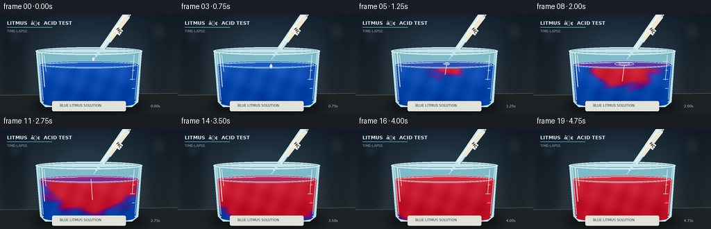
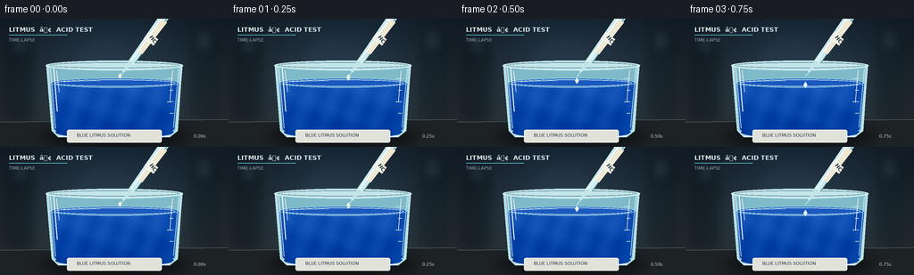

CODING AGENTS AS PIXEL WORLD MODELS
traex/GPT-5.6-Sol · material_0037
点击播放 · 原生 RGB 像素
逐轮保存的候选
回放视频、检查图与代码变化。
每份候选均可单独播放。实际图片检查记录在下方工具轨迹中。
候选 01播放与检查图
点击播放 · 原生 RGB 像素

展开代码变化
--- 上一保存版本
+++ 本次保存版本
@@ -0,0 +1,204 @@
+from pathlib import Path
+import math
+import numpy as np
+from PIL import Image, ImageDraw, ImageFont, ImageFilter
+import artifact_io
+
+W, H, N = 256, 144, 20
+S = 3
+w, h = W*S, H*S
+CASE_DIR = Path(__file__).resolve().parent
+rng = np.random.default_rng(37)
+
+try:
+ FONT_B = ImageFont.truetype('/usr/share/fonts/truetype/dejavu/DejaVuSans-Bold.ttf', 7*S)
+ FONT_S = ImageFont.truetype('/usr/share/fonts/truetype/dejavu/DejaVuSans.ttf', 5*S)
+ FONT_HCL = ImageFont.truetype('/usr/share/fonts/truetype/dejavu/DejaVuSans-Bold.ttf', 6*S)
+except OSError:
+ FONT_B = FONT_S = FONT_HCL = ImageFont.load_default()
+
+def sc(v): return int(round(v*S))
+def pts(seq): return [(sc(x),sc(y)) for x,y in seq]
+def smoothstep(a, b, x):
+ z = np.clip((x-a)/(b-a), 0.0, 1.0)
+ return z*z*(3-2*z)
+
+def ellipse(draw, box, **kw): draw.ellipse(tuple(sc(v) for v in box), **kw)
+def line(draw, xy, **kw): draw.line(pts(xy), **kw)
+def polygon(draw, xy, **kw): draw.polygon(pts(xy), **kw)
+def rounded(draw, box, radius, **kw): draw.rounded_rectangle(tuple(sc(v) for v in box), radius=sc(radius), **kw)
+
+# Fixed, subtle film grain keeps the scene tactile without temporal noise.
+gr = rng.normal(0, 1.0, (h,w,1))
+Y, X = np.mgrid[0:h,0:w]
+xf, yf = X/S, Y/S
+
+frames=[]
+for fi in range(N):
+ # Cool, softly vignetted laboratory backdrop.
+ yy = np.linspace(0,1,h)[:,None,None]
+ xx = np.linspace(0,1,w)[None,:,None]
+ top = np.array([25,38,52.],dtype=float)
+ bottom = np.array([52,63,69.],dtype=float)
+ arr = top + (bottom-top)*yy
+ arr = np.broadcast_to(arr,(h,w,3)).copy()
+ vign = 1 - 0.31*((xx-.5)**2/0.25 + (yy-.48)**2/0.45)
+ arr *= np.clip(vign, .70, 1.05)
+ # Diffuse teal practical light behind the glass.
+ glow = np.exp(-(((xf-129)/82)**2 + ((yf-57)/67)**2))[:,:,None]
+ arr += glow*np.array([3,10,14.])
+ arr += gr
+ im = Image.fromarray(np.uint8(np.clip(arr,0,255)), 'RGB').convert('RGBA')
+
+ # Out-of-focus lab shapes.
+ blur = Image.new('RGBA',(w,h),(0,0,0,0)); bd=ImageDraw.Draw(blur)
+ rounded(bd,(8,29,36,112),4,fill=(7,17,25,95)); rounded(bd,(214,19,242,111),5,fill=(8,20,27,75))
+ rounded(bd,(16,14,27,34),3,fill=(89,116,127,40)); rounded(bd,(223,8,235,31),3,fill=(102,123,130,34))
+ ellipse(bd,(76,17,159,94),fill=(49,91,105,22))
+ blur=blur.filter(ImageFilter.GaussianBlur(sc(5))); im.alpha_composite(blur)
+ d=ImageDraw.Draw(im)
+
+ # Educational title strip, quiet enough not to dominate the experiment.
+ d.text((sc(10),sc(8)), 'LITMUS ⢠ACID TEST', font=FONT_B, fill=(218,232,235,205))
+ line(d,[(10,18),(75,18)],fill=(98,207,221,120),width=sc(.6))
+ d.text((sc(10),sc(21)), 'TIME-LAPSE', font=FONT_S, fill=(149,171,179,150))
+
+ # Worktop and grounded shadow.
+ polygon(d,[(0,116),(256,113),(256,144),(0,144)],fill=(29,34,37,255))
+ line(d,[(0,116),(256,113)],fill=(125,140,142,68),width=sc(.7))
+ sh = Image.new('RGBA',(w,h),(0,0,0,0)); sd=ImageDraw.Draw(sh)
+ ellipse(sd,(43,121,213,143),fill=(0,0,0,145)); sh=sh.filter(ImageFilter.GaussianBlur(sc(7))); im.alpha_composite(sh)
+ d=ImageDraw.Draw(im)
+
+ # Glass body behind liquid.
+ polygon(d,[(52,52),(58,126),(65,133),(190,133),(199,126),(204,52)],fill=(177,219,227,16))
+ polygon(d,[(55,55),(60,125),(67,130),(188,130),(196,125),(201,55)],fill=(127,186,200,10))
+
+ # Reaction field clipped to the litmus volume.
+ fluid_mask = Image.new('L',(w,h),0); md=ImageDraw.Draw(fluid_mask)
+ polygon(md,[(57,72),(61,124),(67,129),(188,129),(195,124),(200,72)],fill=255)
+ ellipse(md,(57,66.5,200,77.5),fill=255)
+ ellipse(md,(62,121,195,134),fill=255)
+ fm = np.asarray(fluid_mask,dtype=float)/255.0
+
+ p = np.clip((fi-3.7)/15.3,0,1)
+ yn = (yf-71.5)/58.0
+ # Expanding acid front; rippled threshold gives organic mixing boundaries.
+ dist = np.sqrt(((xf-131)/91.0)**2 + ((yf-71.5)/63.0)**2)
+ wobble = .055*np.sin(xf*.13 + np.sin(yf*.19-fi*.17)*1.7 + fi*.11)
+ front = smoothstep(0.17, -0.08, dist - (0.10 + 1.32*p + wobble))
+ # Downward sinuous plume from the impact point.
+ pathx = 131 + (4+9*yn)*np.sin(yn*6.3 - p*4.7)*np.clip(yn,0,1)
+ plume_width = 3.7 + 17*p + 5*np.clip(yn,0,1)
+ plume = np.exp(-((xf-pathx)/plume_width)**2)
+ plume *= smoothstep(p*1.42+.06, p*1.42-.22, yn)
+ plume *= smoothstep(-.13,.04,yn)
+ # Coherent curling eddies make the accelerated diffusion read as timelapse.
+ eddy = np.zeros((h,w),float)
+ for phase, side in [(0.0,-1),(1.9,1),(3.7,-1)]:
+ age=np.clip(p*1.28-phase*.10,0,1)
+ cy=77+age*(30+phase*5)
+ cx=131+side*(9+age*25)+7*math.sin(age*4+phase)
+ sigx=5+age*18; sigy=4+age*11
+ eddy=np.maximum(eddy,np.exp(-(((xf-cx)/sigx)**2+((yf-cy)/sigy)**2))*age)
+ reaction = np.clip(np.maximum(front, np.maximum(plume*.92, eddy*.82))*smoothstep(0,.055,p),0,1)
+ if fi == N-1:
+ reaction = np.maximum(reaction, .96)
+
+ blue=np.array([13.,76.,177.]); violet=np.array([111.,27.,139.]); red=np.array([202.,28.,48.])
+ r1=np.clip(reaction*2,0,1)[...,None]
+ r2=np.clip((reaction-.5)*2,0,1)[...,None]
+ fluid=blue*(1-r1)+violet*r1
+ fluid=fluid*(1-r2)+red*r2
+ # Depth, caustics and tiny suspended-light texture.
+ depthlight=(8-26*np.clip(yn,0,1))[...,None]
+ caustic=(5*np.sin(xf*.22+yf*.08)+3*np.sin(xf*.07-yf*.19+fi*.08))[...,None]
+ fluid += depthlight + caustic
+ alpha=(fm*244)[...,None]
+ rgba=np.concatenate([np.clip(fluid,0,255),alpha],axis=2).astype(np.uint8)
+ im.alpha_composite(Image.fromarray(rgba,'RGBA'))
+ d=ImageDraw.Draw(im)
+
+ # Surface: colored meniscus, specular bands, and contact ripple.
+ avg_r=float(np.clip(p*1.25,0,1))
+ if avg_r < .5:
+ c=blue*(1-avg_r*2)+violet*(avg_r*2)
+ else:
+ c=violet*(2-avg_r*2)+red*(avg_r*2-1)
+ c=tuple(int(v+13) for v in c)
+ ellipse(d,(57,66.6,200,77.4),fill=(*c,190),outline=(145,220,230,95),width=sc(.7))
+ ellipse(d,(61,68.3,196,75.9),outline=(226,249,248,48),width=sc(.6))
+ line(d,[(66,70.5),(112,69.2)],fill=(221,248,252,85),width=sc(.7))
+ if 4 <= fi <= 10:
+ rr=2+(fi-4)*3.0
+ # flattened elliptical waves expanding from impact
+ box=(131-rr,71-rr*.17,131+rr,71+rr*.17)
+ ellipse(d,box,outline=(235,247,246,max(20,155-(fi-4)*21)),width=sc(.8))
+ if fi>=6:
+ rr2=rr*.58
+ ellipse(d,(131-rr2,71-rr2*.16,131+rr2,71+rr2*.16),outline=(247,244,250,max(15,110-(fi-6)*20)),width=sc(.5))
+
+ # Acid plume streak at entry, visible inside the liquid early on.
+ if 4 <= fi <= 11:
+ a=max(0,125-(fi-4)*12)
+ line(d,[(131,72),(130+3*math.sin(fi*.7),83+min(19,(fi-4)*3.2))],fill=(246,198,205,a),width=sc(1.1))
+
+ # Beaker outlines, molded base, rim and highlights rendered over fluid.
+ line(d,[(52,52),(58,125),(65,132),(190,132),(198,125),(204,52)],fill=(190,229,235,170),width=sc(1.3))
+ line(d,[(56,55),(62,123)],fill=(249,255,255,82),width=sc(.7))
+ line(d,[(200,56),(194,122)],fill=(212,245,248,75),width=sc(.7))
+ line(d,[(66,132),(189,132)],fill=(219,241,241,104),width=sc(1.0))
+ ellipse(d,(51,47,205,58),fill=(195,230,234,18),outline=(205,237,241,185),width=sc(1.2))
+ ellipse(d,(55,49,201,55.5),outline=(88,129,143,160),width=sc(.8))
+ line(d,[(60,55),(64,104)],fill=(255,255,255,74),width=sc(1.0))
+ line(d,[(63,58),(66,82)],fill=(255,255,255,115),width=sc(.65))
+ line(d,[(193,58),(190,94)],fill=(255,255,255,48),width=sc(.7))
+ # Graduations on right wall.
+ for gy,ln in [(67,7),(80,4),(93,7),(106,4)]:
+ line(d,[(194-ln,gy),(194,gy)],fill=(210,237,238,100),width=sc(.6))
+
+ # Small white bench label grounds what liquid is being observed.
+ rounded(d,(75,124.5,181,139),2,fill=(225,226,217,225),outline=(252,252,244,180),width=sc(.5))
+ d.text((sc(86),sc(128)), 'BLUE LITMUS SOLUTION',font=FONT_S,fill=(37,51,59,230))
+
+ # Diagonal glass dropper; tip aligned with impact point.
+ # barrel from upper-right into center
+ polygon(d,[(181,-7),(190,-2),(150,51),(144,47)],fill=(202,235,239,55),outline=(222,247,249,150))
+ line(d,[(184,-5),(147,47)],fill=(255,255,255,130),width=sc(.9))
+ line(d,[(188,-2),(151,50)],fill=(86,126,140,105),width=sc(.7))
+ # acid tint inside barrel
+ polygon(d,[(181,1),(187,4),(159,40),(155,37)],fill=(238,232,210,90))
+ # HCl label band
+ polygon(d,[(166,15),(177,23),(172,30),(161,22)],fill=(238,241,234,220),outline=(255,255,255,180))
+ # Rotated label as separate layer
+ lab=Image.new('RGBA',(30*S,14*S),(0,0,0,0)); ld=ImageDraw.Draw(lab)
+ ld.text((sc(3),sc(3)),'HCl',font=FONT_HCL,fill=(43,48,51,255))
+ lab=lab.rotate(-53,resample=Image.Resampling.BICUBIC,expand=True)
+ im.alpha_composite(lab,(sc(161),sc(13)))
+ d=ImageDraw.Draw(im)
+ polygon(d,[(150,48),(145,47),(137,59),(139,60)],fill=(192,228,232,105),outline=(223,248,249,160))
+ line(d,[(139,59),(134,65)],fill=(220,243,245,125),width=sc(.7))
+
+ # The one dosed droplet: forms, detaches, falls, and vanishes at impact.
+ if fi <= 4:
+ if fi==0:
+ cy=64.2; size=2.2
+ else:
+ cy=64.0 + (fi**1.55)*1.9; size=2.5
+ cx=134.2
+ # pointed teardrop
+ polygon(d,[(cx,cy-size*1.45),(cx-size*.85,cy),(cx,cy+size*1.35),(cx+size*.85,cy)],
+ fill=(225,239,225,210),outline=(255,255,255,230))
+ ellipse(d,(cx-.7,cy-1.2,cx+.25,cy-.2),fill=(255,255,255,205))
+ elif fi==5:
+ ellipse(d,(128.5,69.3,134.5,72.6),outline=(248,250,244,150),width=sc(.8))
+
+ # Soft time marker conveys accelerated capture without obscuring chemistry.
+ d.text((sc(217),sc(129)),f'{fi/4:04.2f}s',font=FONT_S,fill=(193,205,205,140))
+
+ out=im.convert('RGB').resize((W,H),Image.Resampling.LANCZOS)
+ frames.append(np.asarray(out,dtype=np.uint8))
+
+frames=np.stack(frames)
+artifact_io.save(frames,CASE_DIR)
+print(f'saved {frames.shape} RGB frames to {CASE_DIR}')
可观测工具轨迹
实际执行的命令与返回图片。
命令 1exit 0
/bin/bash -lc "cat prompt.txt && printf '\\n--- GENERATION_RULES ---\\n' && cat GENERATION_RULES.md"
命令 2exit 0
/bin/bash -lc "cat task_spec.json && printf '\\n--- FILES ---\\n' && find . -maxdepth 2 -type f -printf '%p\\n' | sort"
命令 3exit 0
/bin/bash -lc "command -v ffmpeg; command -v python3; python3 - <<'PY' mods=['PIL','numpy','cv2','cairo','imageio','moviepy'] for m in mods: try: x=__import__(m); print(m,'OK',getattr(x,'__version__','')) except Exception as e: print(m,'NO',e) PY"
命令 4exit 0
/bin/bash -lc 'cat artifact_io.py'
命令 5exit 0
/bin/bash -lc "cat > generate.py <<'PY'
from pathlib import Path
import math
import numpy as np
from PIL import Image, ImageDraw, ImageFont, ImageFilter
import artifact_io
W, H, N = 256, 144, 20
S = 3
w, h = W*S, H*S
CASE_DIR = Path(__file__).resolve().parent
rng = np.random.default_rng(37)
try:
FONT_B = ImageFont.truetype('/usr/share/fonts/truetype/dejavu/DejaVuSans-Bold.ttf', 7*S)
FONT_S = ImageFont.truetype('/usr/share/fonts/truetype/dejavu/DejaVuSans.ttf', 5*S)
FONT_HCL = ImageFont.truetype('/usr/share/fonts/truetype/dejavu/DejaVuSans-Bold.ttf', 6*S)
except OSError:
FONT_B = FONT_S = FONT_HCL = ImageFont.load_default()
def sc(v): return int(round(v*S))
def pts(seq): return [(sc(x),sc(y)) for x,y in seq]
def smoothstep(a, b, x):
z = np.clip((x-a)/(b-a), 0.0, 1.0)
return z*z*(3-2*z)
def ellipse(draw, box, **kw): draw.ellipse(tuple(sc(v) for v in box), **kw)
def line(draw, xy, **kw): draw.line(pts(xy), **kw)
def polygon(draw, xy, **kw): draw.polygon(pts(xy), **kw)
def rounded(draw, box, radius, **kw): draw.rounded_rectangle(tuple(sc(v) for v in box), radius=sc(radius), **kw)
# Fixed, subtle film grain keeps the scene tactile without temporal noise.
gr = rng.normal(0, 1.0, (h,w,1))
Y, X = np.mgrid[0:h,0:w]
xf, yf = X/S, Y/S
frames=[]
for fi in range(N):
# Cool, softly vignetted laboratory backdrop.
yy = np.linspace(0,1,h)[:,None,None]
xx = np.linspace(0,1,w)[None,:,None]
top = np.array([25,38,52.],dtype=float)
bottom = np.array([52,63,69.],dtype=float)
arr = top + (bottom-top)*yy
arr = np.broadcast_to(arr,(h,w,3)).copy()
vign = 1 - 0.31*((xx-.5)**2/0.25 + (yy-.48)**2/0.45)
arr *= np.clip(vign, .70, 1.05)
# Diffuse teal practical light behind the glass.
glow = np.exp(-(((xf-129)/82)**2 + ((yf-57)/67)**2))[:,:,None]
arr += glow*np.array([3,10,14.])
arr += gr
im = Image.fromarray(np.uint8(np.clip(arr,0,255)), 'RGB').convert('RGBA')
# Out-of-focus lab shapes.
blur = Image.new('RGBA',(w,h),(0,0,0,0)); bd=ImageDraw.Draw(blur)
rounded(bd,(8,29,36,112),4,fill=(7,17,25,95)); rounded(bd,(214,19,242,111),5,fill=(8,20,27,75))
rounded(bd,(16,14,27,34),3,fill=(89,116,127,40)); rounded(bd,(223,8,235,31),3,fill=(102,123,130,34))
ellipse(bd,(76,17,159,94),fill=(49,91,105,22))
blur=blur.filter(ImageFilter.GaussianBlur(sc(5))); im.alpha_composite(blur)
d=ImageDraw.Draw(im)
# Educational title strip, quiet enough not to dominate the experiment.
d.text((sc(10),sc(8)), 'LITMUS ⢠ACID TEST', font=FONT_B, fill=(218,232,235,205))
line(d,[(10,18),(75,18)],fill=(98,207,221,120),width=sc(.6))
d.text((sc(10),sc(21)), 'TIME-LAPSE', font=FONT_S, fill=(149,171,179,150))
# Worktop and grounded shadow.
polygon(d,[(0,116),(256,113),(256,144),(0,144)],fill=(29,34,37,255))
line(d,[(0,116),(256,113)],fill=(125,140,142,68),width=sc(.7))
sh = Image.new('RGBA',(w,h),(0,0,0,0)); sd=ImageDraw.Draw(sh)
ellipse(sd,(43,121,213,143),fill=(0,0,0,145)); sh=sh.filter(ImageFilter.GaussianBlur(sc(7))); im.alpha_composite(sh)
d=ImageDraw.Draw(im)
# Glass body behind liquid.
polygon(d,[(52,52),(58,126),(65,133),(190,133),(199,126),(204,52)],fill=(177,219,227,16))
polygon(d,[(55,55),(60,125),(67,130),(188,130),(196,125),(201,55)],fill=(127,186,200,10))
# Reaction field clipped to the litmus volume.
fluid_mask = Image.new('L',(w,h),0); md=ImageDraw.Draw(fluid_mask)
polygon(md,[(57,72),(61,124),(67,129),(188,129),(195,124),(200,72)],fill=255)
ellipse(md,(57,66.5,200,77.5),fill=255)
ellipse(md,(62,121,195,134),fill=255)
fm = np.asarray(fluid_mask,dtype=float)/255.0
p = np.clip((fi-3.7)/15.3,0,1)
yn = (yf-71.5)/58.0
# Expanding acid front; rippled threshold gives organic mixing boundaries.
dist = np.sqrt(((xf-131)/91.0)**2 + ((yf-71.5)/63.0)**2)
wobble = .055*np.sin(xf*.13 + np.sin(yf*.19-fi*.17)*1.7 + fi*.11)
front = smoothstep(0.17, -0.08, dist - (0.10 + 1.32*p + wobble))
# Downward sinuous plume from the impact point.
pathx = 131 + (4+9*yn)*np.sin(yn*6.3 - p*4.7)*np.clip(yn,0,1)
plume_width = 3.7 + 17*p + 5*np.clip(yn,0,1)
plume = np.exp(-((xf-pathx)/plume_width)**2)
plume *= smoothstep(p*1.42+.06, p*1.42-.22, yn)
plume *= smoothstep(-.13,.04,yn)
# Coherent curling eddies make the accelerated diffusion read as timelapse.
eddy = np.zeros((h,w),float)
for phase, side in [(0.0,-1),(1.9,1),(3.7,-1)]:
age=np.clip(p*1.28-phase*.10,0,1)
cy=77+age*(30+phase*5)
cx=131+side*(9+age*25)+7*math.sin(age*4+phase)
sigx=5+age*18; sigy=4+age*11
eddy=np.maximum(eddy,np.exp(-(((xf-cx)/sigx)**2+((yf-cy)/sigy)**2))*age)
reaction = np.clip(np.maximum(front, np.maximum(plume*.92, eddy*.82))*smoothstep(0,.055,p),0,1)
if fi == N-1:
reaction = np.maximum(reaction, .96)
blue=np.array([13.,76.,177.]); violet=np.array([111.,27.,139.]); red=np.array([202.,28.,48.])
r1=np.clip(reaction*2,0,1)[...,None]
r2=np.clip((reaction-.5)*2,0,1)[...,None]
fluid=blue*(1-r1)+violet*r1
fluid=fluid*(1-r2)+red*r2
# Depth, caustics and tiny suspended-light texture.
depthlight=(8-26*np.clip(yn,0,1))[...,None]
caustic=(5*np.sin(xf*.22+yf*.08)+3*np.sin(xf*.07-yf*.19+fi*.08))[...,None]
fluid += depthlight + caustic
alpha=(fm*244)[...,None]
rgba=np.concatenate([np.clip(fluid,0,255),alpha],axis=2).astype(np.uint8)
im.alpha_composite(Image.fromarray(rgba,'RGBA'))
d=ImageDraw.Draw(im)
# Surface: colored meniscus, specular bands, and contact ripple.
avg_r=float(np.clip(p*1.25,0,1))
if avg_r < .5:
c=blue*(1-avg_r*2)+violet*(avg_r*2)
else:
c=violet*(2-avg_r*2)+red*(avg_r*2-1)
c=tuple(int(v+13) for v in c)
ellipse(d,(57,66.6,200,77.4),fill=(*c,190),outline=(145,220,230,95),width=sc(.7))
ellipse(d,(61,68.3,196,75.9),outline=(226,249,248,48),width=sc(.6))
line(d,[(66,70.5),(112,69.2)],fill=(221,248,252,85),width=sc(.7))
if 4 <= fi <= 10:
rr=2+(fi-4)*3.0
# flattened elliptical waves expanding from impact
box=(131-rr,71-rr*.17,131+rr,71+rr*.17)
ellipse(d,box,outline=(235,247,246,max(20,155-(fi-4)*21)),width=sc(.8))
if fi>=6:
rr2=rr*.58
ellipse(d,(131-rr2,71-rr2*.16,131+rr2,71+rr2*.16),outline=(247,244,250,max(15,110-(fi-6)*20)),width=sc(.5))
# Acid plume streak at entry, visible inside the liquid early on.
if 4 <= fi <= 11:
a=max(0,125-(fi-4)*12)
line(d,[(131,72),(130+3*math.sin(fi*.7),83+min(19,(fi-4)*3.2))],fill=(246,198,205,a),width=sc(1.1))
# Beaker outlines, molded base, rim and highlights rendered over fluid.
line(d,[(52,52),(58,125),(65,132),(190,132),(198,125),(204,52)],fill=(190,229,235,170),width=sc(1.3))
line(d,[(56,55),(62,123)],fill=(249,255,255,82),width=sc(.7))
line(d,[(200,56),(194,122)],fill=(212,245,248,75),width=sc(.7))
line(d,[(66,132),(189,132)],fill=(219,241,241,104),width=sc(1.0))
ellipse(d,(51,47,205,58),fill=(195,230,234,18),outline=(205,237,241,185),width=sc(1.2))
ellipse(d,(55,49,201,55.5),outline=(88,129,143,160),width=sc(.8))
line(d,[(60,55),(64,104)],fill=(255,255,255,74),width=sc(1.0))
line(d,[(63,58),(66,82)],fill=(255,255,255,115),width=sc(.65))
line(d,[(193,58),(190,94)],fill=(255,255,255,48),width=sc(.7))
# Graduations on right wall.
for gy,ln in [(67,7),(80,4),(93,7),(106,4)]:
line(d,[(194-ln,gy),(194,gy)],fill=(210,237,238,100),width=sc(.6))
# Small white bench label grounds what liquid is being observed.
rounded(d,(75,124.5,181,139),2,fill=(225,226,217,225),outline=(252,252,244,180),width=sc(.5))
d.text((sc(86),sc(128)), 'BLUE LITMUS SOLUTION',font=FONT_S,fill=(37,51,59,230))
# Diagonal glass dropper; tip aligned with impact point.
# barrel from upper-right into center
polygon(d,[(181,-7),(190,-2),(150,51),(144,47)],fill=(202,235,239,55),outline=(222,247,249,150))
line(d,[(184,-5),(147,47)],fill=(255,255,255,130),width=sc(.9))
line(d,[(188,-2),(151,50)],fill=(86,126,140,105),width=sc(.7))
# acid tint inside barrel
polygon(d,[(181,1),(187,4),(159,40),(155,37)],fill=(238,232,210,90))
# HCl label band
polygon(d,[(166,15),(177,23),(172,30),(161,22)],fill=(238,241,234,220),outline=(255,255,255,180))
# Rotated label as separate layer
lab=Image.new('RGBA',(30*S,14*S),(0,0,0,0)); ld=ImageDraw.Draw(lab)
ld.text((sc(3),sc(3)),'HCl',font=FONT_HCL,fill=(43,48,51,255))
lab=lab.rotate(-53,resample=Image.Resampling.BICUBIC,expand=True)
im.alpha_composite(lab,(sc(161),sc(13)))
d=ImageDraw.Draw(im)
polygon(d,[(150,48),(145,47),(137,59),(139,60)],fill=(192,228,232,105),outline=(223,248,249,160))
line(d,[(139,59),(134,65)],fill=(220,243,245,125),width=sc(.7))
# The one dosed droplet: forms, detaches, falls, and vanishes at impact.
if fi <= 4:
if fi==0:
cy=64.2; size=2.2
else:
cy=64.0 + (fi**1.55)*1.9; size=2.5
cx=134.2
# pointed teardrop
polygon(d,[(cx,cy-size*1.45),(cx-size*.85,cy),(cx,cy+size*1.35),(cx+size*.85,cy)],
fill=(225,239,225,210),outline=(255,255,255,230))
ellipse(d,(cx-.7,cy-1.2,cx+.25,cy-.2),fill=(255,255,255,205))
elif fi==5:
ellipse(d,(128.5,69.3,134.5,72.6),outline=(248,250,244,150),width=sc(.8))
# Soft time marker conveys accelerated capture without obscuring chemistry.
d.text((sc(217),sc(129)),f'{fi/4:04.2f}s',font=FONT_S,fill=(193,205,205,140))
out=im.convert('RGB').resize((W,H),Image.Resampling.LANCZOS)
frames.append(np.asarray(out,dtype=np.uint8))
frames=np.stack(frames)
artifact_io.save(frames,CASE_DIR)
print(f'saved {frames.shape} RGB frames to {CASE_DIR}')
PY
python3 generate.py
ls -lh pixels.npz inspection.png index.html frames/00.png frames/19.png"命令 6exit 0
/bin/bash -lc "python3 - <<'PY'
import json, numpy as np
from pathlib import Path
p=Path('.')
s=json.loads(Path('task_spec.json').read_text())
z=np.load('pixels.npz')['pixels']
assert z.shape==(s['height'],s['width'],s['frames']) and z.dtype==np.uint32
assert len(list(Path('frames').glob('*.png')))==s['frames']
assert Path('index.html').stat().st_size>0
# Decode and report broad color change for validation.
a=z[:,:,0]; b=z[:,:,-1]
r0=((a>>16)&255).mean(); bl0=(a&255).mean()
r1=((b>>16)&255).mean(); bl1=(b&255).mean()
print('artifact checks: PASS')
print('pixels:',z.shape,z.dtype,'frames:',len(list(Path('frames').glob('*.png'))))
print(f'mean R/B frame 0: {r0:.1f}/{bl0:.1f}; frame 19: {r1:.1f}/{bl1:.1f}')
PY"视觉工具实际返回图片 1

视觉工具实际返回图片 2

保存候选 1 份；完成命令 6 次；可验证图片返回 2 张。原始 API 响应与完整日志保留在本地。